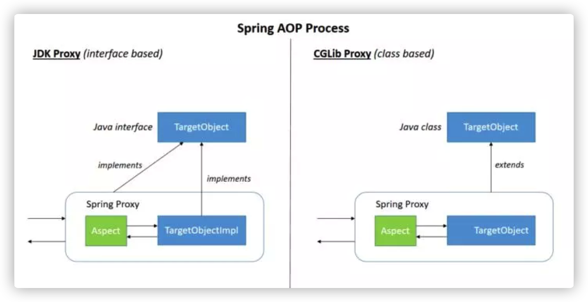

Spring笔记
简介
Spring是一款开源的轻量级框架，主要是为了解决企业应用程序开发的复杂性而创建的。近几年比较流行的微服务框架SpringBoot，也是基于Spring实现的。
核心
Spring核心主要包含以下三部分：
- 控制反转（
IoC） - 依赖注入（
DI） - 面向切面编程（
AOP）
控制反转
控制反转（Inverse of Control）是一种设计思想，将原本在程序中手动创建对象的控制权交给Spring容器管理。IoC容器实际上就是一个Map，存放着各种对象。
我们将对象之间的依赖关系交给了容器进行管理，将对象注入容器。这样就有效降低了代码的耦合度，简化了开发，当我们要使用某个对象时，只需要配置好文件或者注解即可，而不用考虑底层是怎样创建出这个对象的，听起来有点像工厂模式。实际上，Spring的IoC就是利用反射+工厂模式实现的。
1 | interface Fruit { |
我们自己设计了一个工厂类，从中获取对象。而Spring使用的是BeanFactory。BeanFactory是Spring IoC容器的核心接口，定义了IoC的基本功能。使用BeanFactory启动容器时，只有使用到了某个Bean时才会对其进行实例化。
ApplicationContext
ApplicationContext由BeanFactory派生而来，提供了更多面向应用的功能：
- 资源访问，例如文件和
URL。 - 支持
AOP特性。 - 载入多个具有继承关系的上下文，使得每一个上下文都关注于一个特定的层次。
- 提供国际化的消息访问。
ApplicationContext在容器启动时就会一次性创建所有的Bean。好处是如果存在配置错误，可以在一开始就发现它。但同时消耗的内存也会更多，启动效率更低。
ApplicationContext有两个具体的实现类，用于读取配置文件：
ClassPathXmlApplicationContext：从类路径加载配置文件。FileSystemXmlApplicationContext：从本地文件中加载配置文件。
实战
首先创建一个Maven工程，导入依赖：
1 | <dependency> |
创建一个User对象：
1 | package bean; |
在resources目录创建配置文件test.xml：
1 |
|
Bean标签有几个常见属性：
id：给实例化对象起名字，原则上可以是任意不包含非特殊符号的字符串。class：创建的对象所在类的路径。name：和id作用差不多，一般不用了。scope：作用域。一般有单例模式Singleton（整个应用程序只创建一个实例）和原型模式Prototype（每次注入都会创建一个新的实例）。Spring默认使用的是单例模式。
1 | public class Test { |
依赖注入
依赖注入（Dependency Injection）。利用配置文件把资源从外部注入到内部，容器加载外部的文件、对象、数据，把这些资源注入给程序中的对象，维护了程序内外对象之间的依赖关系。所以说IoC是设计思想，而DI就是Spring的具体实现。
依赖注入常见的方式：
setter注入- 构造方法注入
- 注解注入
setter注入
1 | public class Main { |
1 | <bean id="testBean" class="bean.User"/> |
构造方法注入
1 | public class Main { |
1 | <bean id="testBean" class="bean.User"/> |
注解注入
在bean目录创建UserDao、UserService
1 |
|
1 |
|
配置
1 |
|
1 | public class Main { |
面向切面编程
面向切面编程（Aspect Oriented Programming），能够封装与业务无关，却被不同业务共同调用的代码，例如事务管理、日志管理、权限管理等等，减少了重复代码，降低耦合度，也方便后期代码的维护。
重要概念
Join point：连接点，程序执行期间的某一点，例如执行方法或处理异常时的点。在Spring AOP中，连接点表示方法的执行。Advice：通知。分为方法执行前通知、方法执行后通知、环绕通知等等，类似于拦截器，对连接点的方法进行增强。Pointcut：切点，匹配连接点的表达式。Spring默认使用AspectJ作为切入点表达式语言。Aspect：切面，是通知和切点集合的抽象，定义了一个切点用来匹配连接点。Target Object：被通知的对象。AOP proxy：AOP代理，为了实现切面功能而使用AOP框架创建一个对象。Spring中的AOP代理指的是使用JDK动态代理或者cglib动态代理。如果要代理的对象实现了某个接口，那么会使用JDK动态代理，否则使用cglib。

Weaving：织入。指把切面加入到对象，创建出代理对象的过程。Advisor：增强器。是切面的另一种实现，不同的是只有一种通知。
AspectJ
AspectJ是一个面向切面的框架，定义了AOP的语法，有一个专门的字节码生成器来生成遵守Java规范的class文件。
AspectJ一共有前置、后置、环绕、异常、最终这五种通知类型。我们只需要根据AspectJ提供的切点表达式配置好切面就可以了。
- 前置通知
@Before：在目标方法执行前执行的通知。 - 后置通知
@After：在目标方法执行后执行的通知。 - 环绕通知
@Around：在目标方法执行前和后都可以执行的通知。 - 异常通知
@AfterThrowing：方法抛出异常后执行的通知。 - 最终通知
@AfterReturning：在某连接点正常完成后执行的通知。
执行顺序：
- 无异常时，
around start -> before -> around start -> afterReturning -> after - 发生异常时，
around start -> before -> afterThrowing ->after
实战
定义一个跑步的方法。
1 |
|
定义切点表达式
1 |
|
配置文件
1 |
|
测试
1 | public class Test { |
运行发现顺序是around before -> before -> 开始跑步 -> afterReturning -> after -> around after。这和以前的版本略有不同，我的版本是5.3.3。模拟发生一个算术异常，再运行的顺序是around before -> before -> after -> around exception: / by zero -> around after。
Spring AOP 与 AspectJ
Spring AOP属于运行时增强，AspectJ属于编译时增强。Spring AOP基于代理，而AspectJ基于字节码的操作。Spring AOP性能比较差，如果切面比较多，建议使用AspectJ。
作用域
Spring中的bean有好几种作用域：
singleton：单例模式。只产生一个实例。（默认）prototype：原型模式。每次请求都产生一个新的实例。request：每次HTTP请求产生一个新的实例，该实例仅在当前HTTP request有效。session：每次HTTP请求产生一个新的实例，该实例仅在当前HTTP session有效。global-session：全局session作用域。仅在基于portlet的web应用中才有意义，Spring 5之后已经没有了。
@Component 和 @Bean
@Component作用于类，@Bean作用于方法。@Component通常是通过类路径扫描（@ComponentScan）来侦测和装配对象到容器中；@Bean用来告诉Spring这是某个类的实例。我们要用到第三方库的类时，就需要用@Bean把它装配到容器中。
事务
在Spring中，管理事务的方式有两种：
- 编程式事务，也就是硬编码的方式。并不推荐使用。
- 声明式事务，也就是在配置文件中配置。分为
xml配置和注解配置。推荐使用。
使用声明式事务注解配置的方式，只需要在方法或者类上加上@Transactional注解即可。其底层也是建立在Spring AOP的基础上，在方法执行的前后进行拦截，在目标方法执行前创建一个事务或者加入一个已存在的事务，最后在方法执行完根据情况提交事务或者回滚。
@Transactional有几个参数：
propagation：事务传播行为，默认为REQUIRED。isolation：事务隔离级别，默认为READ_COMMITED。rollbackFor：回滚的异常类型，默认对所有运行时异常进行回滚。readOnly：指定事务是否为只读，默认为false。timeout：指定回滚的超时时间，单位是秒。默认不使用。
隔离级别
Spring的事务隔离级别分为五级：
Isolation_DEFAULT：使用后端数据库默认的隔离级别。MySQL默认的是REPEATABLE_READ，Oracle默认的是READ_COMMITED。Isolation_READ_UNCOMMITED：未提交读。允许读取尚未提交的数据变更，可能会造成脏读、幻读、不可重复读。Isolation_READ_COMMITED：提交读。允许读取并发事务中已提交的数据，可能会造成幻读和不可重复读。Isolation_REPEATABLE_READ：可重复读。保证对同一个字段多次读取的结果都是一样的，可能会造成幻读。Isolation_SERIALIZABLE：序列化。最高的隔离级别。所有事务逐个执行，这样事务之间就不可能产生干扰。但是该级别事务执行的效率非常低。
事务传播行为
支持当前事务的情况：
Propagation.REQUIRED：如果当前存在事务，加入该事务；如果没有，创建一个新事务。Propagation.SUPPORTS：如果当前存在事务，加入该事务；如果没有，以非事务的方式执行。Propagation.MANDATORY：如果当前存在事务，加入该事务；如果没有，抛出异常。
不支持当前事务的情况：
Propagation.REQUIRES_NEW：创建一个新事务。如果当前存在事务，将其挂起。Propagation.NOT_SUPPORTED：以非事务的方式执行。如果当前存在事务，将其挂起。Propagation.NEVER：以非事务的方式执行。如果当前存在事务，抛出异常。
还有一种Propagation.NESTED：如果当前存在事务，就创建一个事务作为当前事务的嵌套事务运行；如果没有，该配置等价于Propagation.REQUIRED。
生命周期
Spring中Bean的生命周期如下：
- 容器利用反射实例化
Bean，如果涉及属性值就调用set方法赋值。 - 如果
Bean实现了BeanNameAware接口，就调用setBeanName()方法，传入Bean的名字。 - 类似的，如果实现了其他
*.Aware接口，就调用相应的方法。 - 如果
Bean实现了InitializingBean接口，执行afterPropertiesSet()方法。 - 如果
Bean在配置文件中的定义包含init-method属性，则调用配置的初始化方法。 - 如果有和加载这个
Bean的Spring容器相关的BeanPostProcessor对象，则执行postProcessAfterInitialization()方法。 - 使用阶段。
- 要销毁
Bean时，如果实现了DisposableBean接口，就执行destroy()方法。 - 如果这个
Bean配置了destroy-method属性，调用配置的销毁方法。
Spring MVC
MVC是一种设计模式，将代码分为多层，降低耦合度，也方便后期的维护和扩展。而Spring MVC是基于该设计模式的一款框架。我们一般把项目分为entity层、dao层、service层、controller层。
流程
- 客户端发起请求，请求到达
DispatcherServlet。 DispatcherServlet根据请求的信息调用HandlerMapping，解析请求对应的Handler。- 解析到对应的
handler之后，由HandlerAdapter适配器处理。 HandlerAdapter根据Handler调用处理器处理请求，以及相应的业务逻辑。- 处理完业务之后，返回一个
ModelAndView对象。 ViewResolver对传来的对象进行解析，返回View。DispatcherServlet把返回的Model传给View进行渲染。- 最后
View返回给请求端。
循环依赖
什么是循环依赖
从字面上的意思来看，就是：假设有两个Bean A、B，A依赖B的同时B又依赖A。用代码体现就是：
1 |
|
1 |
|
还有一种比较特殊的循环依赖，就是自己依赖自己：
1 |
|
什么情况下可以处理循环依赖
Spring解决循环依赖问题是有条件的：
- 出现循环依赖的
Bean必须是单例的。 - 依赖注入的方式不能全是构造器注入。
对于第一点，如果Bean是原型模式的话，是不支持循环依赖的，在获取Bean时会抛出BeanCurrentlyInCreationException异常。

因为在创建A时，要注入B的原型，于是又去创建B，发现要注入A的原型，就类似于死锁了。
对于第二点，如果两个Bean都是构造器注入的话，同样会报BeanCurrentlyInCreationException错误。
Spring 如何解决循环依赖
解决循环依赖的方式要分两种情况来讨论：
- 没有
AOP的循环依赖 - 结合
AOP的循环依赖
首先，Spring创建Bean的时候是根据自然排序的顺序来创建的，也就是说A会先被创建。
创建Bean分三个步骤：
- 实例化，具体在
AbstractAutowireCapableBeanFactory的createBeanInstance方法。 - 属性注入，具体在
AbstractAutowireCapableBeanFactory的populateBean方法。 - 初始化，具体在
AbstractAutowireCapableBeanFactory的initializeBean方法。
所以整个流程以A的创建为起点，调用getBean方法。该方法有两层含义：
- 创建一个新的
Bean。 - 从缓存中获取已创建的对象。
一开始没有缓存的时候，先调用getSingleton(beanName)方法，该方法又会调用getSingleton(beanName, true)。这个方法从缓存中尝试获取Bean，整个缓存分为三级：
1 | /** Cache of singleton objects: bean name to bean instance. */ |
singletonObjects：一级缓存，存储的是所有创建好了的单例Bean。earlySingletonObjects：二级缓存，存储的是完成实例化，但还没有进行属性注入和初始化的对象。singletonFactories：三级缓存，存储的是提前暴露的一个单例工厂对象，二级缓存中存储的对象就是这个从工厂获取到的。
一开始无论哪个缓存中都是没有A的，因此会进入getSingleton的另一个重载方法getSingleton(beanName, singletonFactory)。这个方法就是用来创建Bean的：
1 | public Object getSingleton(String beanName, ObjectFactory<?> singletonFactory) { |
所以以上代码主要是创建Bean，将它放到一级缓存中并且返回该Bean。
完成了实例化，进行属性的注入。在属性注入之前，要将Bean包装为一个工厂添加到三级缓存中。对应源码：
1 | protected void addSingletonFactory(String beanName, ObjectFactory<?> singletonFactory) { |
通过ObjectFactory这个工厂的getObject方法就可以得到Bean的实例对象。而这个对象是通过getEarlyBeanReference方法创建的。那么什么时候会调用getObject方法呢？这就要等到创建B的时候了。
将A添加到三级缓存后，就要开始注入属性了。在注入时，发现A依赖B，于是又去调用getBean(b)。在创建B的时候又要注入A，于是又回到刚才的流程。但这次会直接从三级缓存中获取。从前面的方法可以看出，添加到三级缓存中的Bean还不是一个完整的Bean，只是通过getEarlyBeanReference方法提前暴露出的一个对象。来看看getEarlyBeanReference的源码：
1 | protected Object getEarlyBeanReference(String beanName, RootBeanDefinition mbd, Object bean) { |
if包裹的代码调用了后置处理器的getEarlyBeanReference，而真正实现了这个方法的后置处理器只有一个，就是通过@EnableAspectJAutoProxy注解导入的AnnotationAwareAspectJAutoProxyCreator。也就是说如果没有AOP的情况下，上述代码就相当于：
1 | protected Object getEarlyBeanReference(String beanName, RootBeanDefinition mbd, Object bean) { |
也就是说这个方法就直接将Bean对象返回了而已。那为什么还要三级缓存呢？直接放到二级缓存不也可以吗？这就要看结合AOP的情况了。
开启AOP的时候，相当于调用了AnnotaionAwareAspectJAutoProxyCreator的getEarlyBeanReference方法，其源码在父类AbstractAutoProxyCreator中：
1 |
|
假设我们对A开启了AOP，该方法会返回A的代理对象。也就是说到时候注入B的并不是实例化阶段创建的A对象而是它的代理。
但初始化的时候明明是A对象，Spring是什么时候把代理对象放入容器中的呢？
1 | protected Object doCreateBean(String beanName, RootBeanDefinition mbd, @Nullable Object[] args) |
所以说为什么要三级缓存呢？前面提到，三级缓存存储的只是一个工厂对象，这里的工厂主要是为了延迟创建代理的时机。只有当循环依赖发生的时候，才会提前生成代理对象，否则只会创建一个工厂放入三级缓存中。为啥要这样呢？
假设现在没有循环依赖，单独创建A，并且开启了AOP。那么A完成实例化之后还是会进入下面这段代码：
1 | // mbd.isSingleton()满足，因为A是单例的。 |
也就是说无论有没有循环依赖的发生，Spring都会把Bean放到三级缓存中，这是因为Spring目前还没办法判断该Bean是否会出现循环依赖。
如果我们不使用三级缓存，那就意味着所有的Bean都要在这一步创建好代理对象，并且放入二级缓存。这样做有什么不好呢？这是因为这违背了Spring结合AOP跟Bean的生命周期的设计。Spring结合AOP跟Bean的生命周期是通过AnnotationAwareAspectJAutoProxyCreator这个后置处理器中的postProcessAfterInstantiation方法来完成对初始化之后的Bean的代理。如果发生了循环依赖，才没有办法只能在实例化之后直接创建代理对象。如果没有发生循环依赖不应该破坏原来的生命周期。
总结
Q：Spring如何解决循环依赖？
A：Spring通过三级缓存解决了循环依赖。当两个Bean发生了循环依赖的时候，在A完成了实例化之后，创建它的对象工厂，添加到三级缓存中。如果A被代理了，后续通过这个工厂获得的对象就是代理之后的对象，否则就获得原来的对象。当A进行属性注入时，会去创建B，创建B的时候又会去获取A，但这次是从缓存里拿了。首先获取到三级缓存中的对象工厂，然后调用getObject方法获取对象放到二级缓存并注入到B，然后B会完成自己的生命周期，放到一级缓存中。最后A再注入B，完成自己的生命周期，也放到一级缓存中。至此，循环依赖的问题就解决了。
Q：为什么要使用三级缓存呢？可以使用二级缓存吗？
A：可以使用二级缓存，但这样的话所有的Bean都要在实例化之后就直接创建AOP对象放入二级缓存，这违背了Spring对于AOP的设计原则。